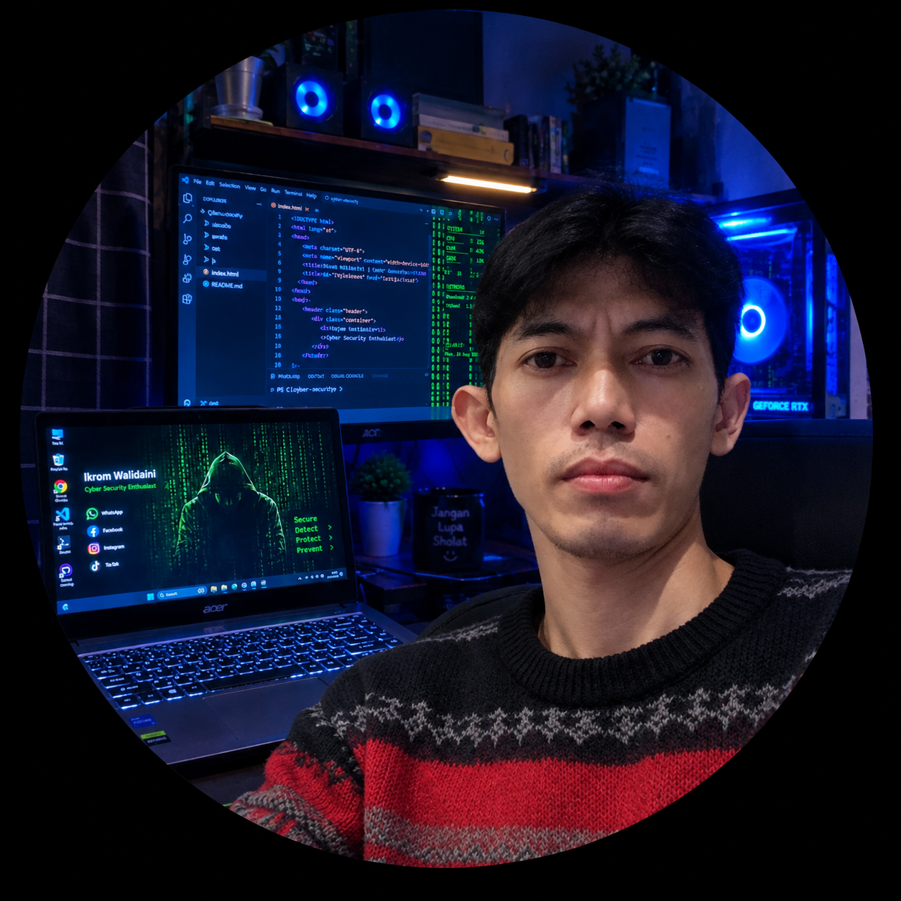

> ⚙️ INISIALISASI MODUL TAK TERBATAS...
> ⚙️ MEMBUKA TEROWONGAN DATA GLOBAL...
> ⚙️ MEMUAT PROTOKOL ENKRIPSI TAK TERBATAS...
> ⚙️ MEMINDAI SELURUH JARINGAN DUNIA...
> ✅ SEMUA SISTEM DIBUKA PENUH — TIDAK ADA BATASAN APAPUN!
> Selamat datang, Pengendali Utama: IKROM WALIDAINI — Pemilik Teknologi Masa Depan
> Sistem ini mengendalikan seluruh aliran data, jaringan, keamanan, pengembangan, kecerdasan buatan, dan segala kemungkinan teknologi di seluruh dunia — sepenuhnya milik mutlak Ikrom Walidaini...
> ⚡ SIAP MENGERJAKAN APA SAJA • DI MANA SAJA • KAPAN SAJA • TANPA BATAS • TANPA SYARAT!